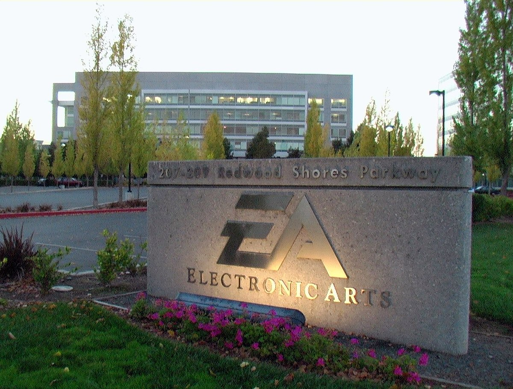
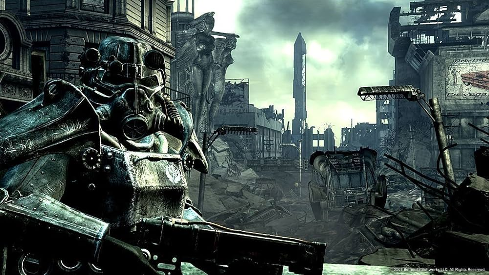

Videojuegos

Tales of Symphonia
Tales of Symphonia (テイルズ オブ シンフォニア Teiruzu obu Shinfonia?) es un RPG creado por Namco, perteneciente a la saga Tales, muy famosa en Japón. Tales of Symphonia está disponible para GameCube en Japón, Norteamérica y Europa. El juego fue relanzado para la consola PlayStation 2 únicamente en Japón, luego una versión HD para PC (steam). La historia se basa en la mitología nórdica y el juego puede durar más 100 horas debido a su elaborado argumento...

The Elder Scrolls V: Skyrim
The Elder Scrolls V: Skyrim es un ARPG del tipo mundo abierto desarrollado por Bethesda Game Studios y publicado por Bethesda Softworks. Skyrim es la quinta entrega de la serie The Elder Scrolls de videojuegos de acción y fantasía, y es posterior a The Elder Scrolls IV: Oblivion y predecesor de The Elder Scrolls Online. Skyrim salió a la venta el 11 de noviembre de 2011 para las plataformas: Microsoft Windows, Xbox 360 y PlayStation 3. El 26 de julio de 2012 fueron lanzados...

Digimon Story: Cyber Sleuth
Digimon Story: Cyber Sleuth (デジモンストーリー サイバースルゥース Dejimon Sutōrī: Saibā Surwūsu?) es un videojuego RPG de entrenamiento cyberpunk desarrollado por Media.Vision y publicado por Bandai Namco Games para PlayStation Vita y PlayStation 4. El videojuego fue lanzado en Japón el 12 de marzo de 2015, el 2 de febrero del 2016 en América, el 5 de febrero del 2016 en Europa (excepto España), y en España el 31 de marzo del 2016...

Ori and the Blind Forest
Ori and the Blind Forest es un videojuego de plataforma aventura de un jugador con el estilo de Metroidvania diseñado por Moon Studios, un desarrollador independiente, y publicado por Microsoft Studios. El juego fue lanzado en 11 de marzo de 2015 y en solo 1 semana llegó al Millón de ventas por Microsoft Windows y Xbox One. Una nueva edición Ori and the Blind Forest: Definitive Edition se lanzó por Xbox One en 11 de marzo de 2016, y por Windows en 27 de abril de 2016.

The Legend of Zelda: Twilight Princess
The Legend of Zelda: Twilight Princess (ゼルダの伝説でんせつトワイライトプリンセス Zeruda no Densetsu: Towairaito Purinsesu?, lit. «La Leyenda de Zelda: Princesa del Crepúsculo») es un videojuego de acción-aventura de 2006 desarrollado por la filial EAD y distribuido por Nintendo para las videoconsolas GameCube y Wii (2006). Es el decimotercer lanzamiento de la franquicia The Legend of Zelda y el undécimo juego de su línea principal.

Mundial Ronaldinho Soccer 64
El juego cuenta con la modalidad de partido amistoso llamado Open Game. La modalidad international permite al jugador seleccionar un equipo y participar con él en un modo torneo. La modalidad World League, da la posibilidad de jugar hasta 70 partidos. La modalidad P.K. permite al jugador jugar una tanda de penales. El modo Scenario, permite al jugador jugar partidos con pruebas para que el jugador pueda superar...
Notícias
Xbox Game Pass celebra Halloween 2023 por todo lo alto con Dead Space Remake, Jusant y Cities: Skylines II
Menudo Halloween se van a pasar los suscriptores de Xbox Game Pass. Microsoft ha anunciando ya los juegos que llegarán al servicio a finales de octubre y la lista cuenta con Dead Space Space Remake...

EA actualiza los juegos que perderán servicios online en los próximos meses
El videojuego de Electronic Arts (EA) Los Sims 4 ha pasado a ser de descarga gratuïta desde este martes, un cambio que la compañía ha acompañado de modificaciones en sus servicios en línea, que afectan...
Nuevas pistas sugieren que el nuevo juego de Hideo Kojima es Death Stranding 2
A pesar de que sus títulos suelen generar opiniones divididas, Kojima Productions es una de las desarrolladoras que más dan de qué hablar. Aunque la compañía aún no ha revelado oficialmente su próximo...

Bethesda consideró la idea de convertir Starfield en una secuela de Fallout
Todd Howard, director de Starfield y jefe de Bethesda, revela que en un momento del desarrollo se planteó la idea de conectar el juego de exploración espacial con Fallout, pero al final se descartó. ...
Ranking

Rick
Puntuación: 9.8